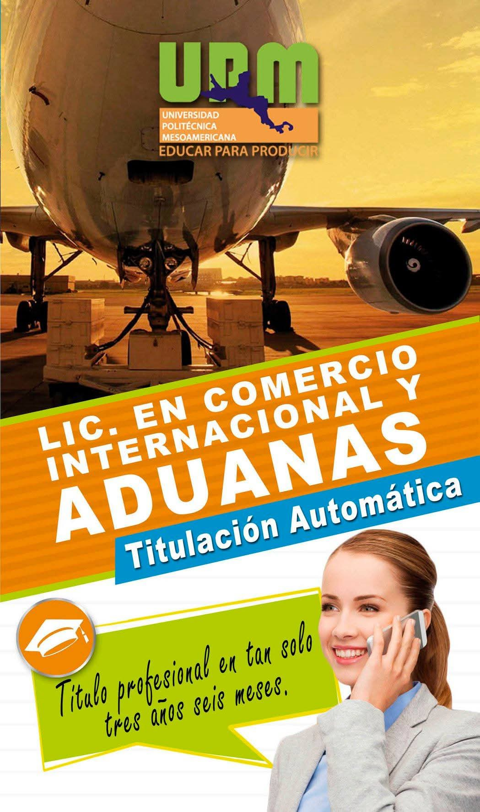

Oferta Educativa
En la Universidad Politécnica Mesoamericana ofrecemos programas educativos enfocados en la formación integral, tecnológica y humanista de nuestros estudiantes.
Ingeniería en Tecnologías de la Información e Innovación Digital

Perfil de Ingreso
- Creatividad, imaginación y sentido de inventiva.
- Interés por la tecnología.
- Disposición para trabajar en equipo.
- Capacidad de análisis y abstracción.
- Gusto por las matemáticas y la física.
- Liderazgo y visión empresarial.
- Responsabilidad y compromiso social.
Perfil de Egreso
El Ingeniero en Tecnologías de la Información será capaz de analizar, diseñar, desarrollar e implementar sistemas basados en el uso de computadoras, aplicando tecnologías actuales y emergentes.
Campo Laboral
- Desarrollador de software.
- Administrador de redes y sistemas.
- Analista de sistemas.
- Consultor en tecnologías de la información.
- Profesional independiente.
Ingeniería en Manejo de Recursos Naturales

Perfil de Ingreso
- Interés por el medio ambiente y la sustentabilidad.
- Compromiso con la conservación de los recursos naturales.
- Capacidad de análisis científico.
- Trabajo colaborativo y responsabilidad social.
Perfil de Egreso
El egresado será capaz de diseñar, implementar y evaluar estrategias para el manejo sustentable de los recursos naturales, considerando el impacto ambiental, social y económico.
Campo Laboral
- Instituciones ambientales.
- Empresas del sector agrícola y forestal.
- Organismos gubernamentales.
- Consultoría ambiental.
Ingeniería Petrolera
Perfil de Ingreso
- Interés por la industria energética.
- Gusto por las matemáticas, física y química.
- Capacidad analítica y pensamiento lógico.
- Responsabilidad y disciplina.
Perfil de Egreso
El Ingeniero Petrolero será capaz de participar en actividades de exploración, perforación, producción y optimización de hidrocarburos, aplicando normas de seguridad y cuidado ambiental.
Campo Laboral
- Industria petrolera.
- Empresas energéticas.
- Consultoría técnica.
- Sector público y privado.
Licenciatura en Administración de Empresas Turísticas

Perfil de Ingreso
- Interés por el turismo y la cultura.
- Habilidades de comunicación.
- Vocación de servicio.
- Trabajo en equipo y liderazgo.
Perfil de Egreso
El egresado podrá planear, administrar y evaluar empresas turísticas, promoviendo el desarrollo sustentable y la calidad en los servicios.
Campo Laboral
- Hoteles y agencias de viaje.
- Empresas turísticas.
- Organismos de promoción turística.
- Emprendimiento propio.
Licenciatura en Comercio Internacional y Aduanas
Perfil de Ingreso
- Interés por el comercio y los negocios internacionales.
- Habilidades numéricas y analíticas.
- Capacidad de negociación.
- Responsabilidad y ética profesional.
Perfil de Egreso
El egresado será capaz de gestionar operaciones de comercio exterior, cumplir normativas aduaneras y diseñar estrategias de importación y exportación.
Campo Laboral
- Agencias aduanales.
- Empresas importadoras y exportadoras.
- Logística internacional.
- Consultoría en comercio exterior.